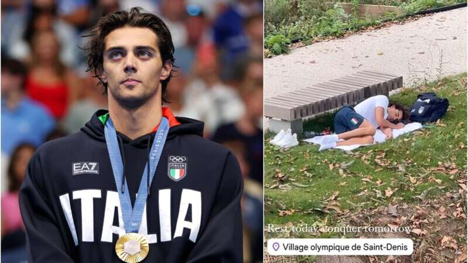
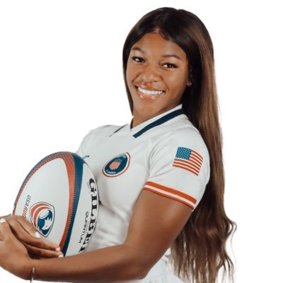
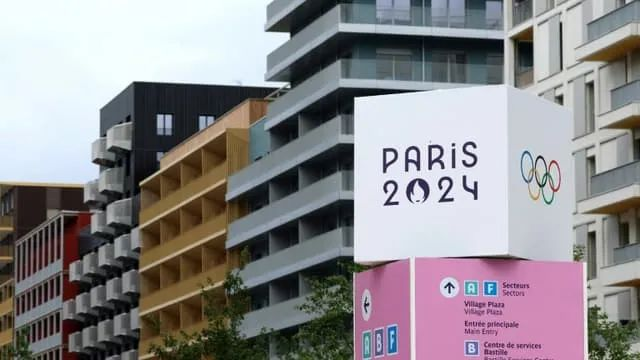
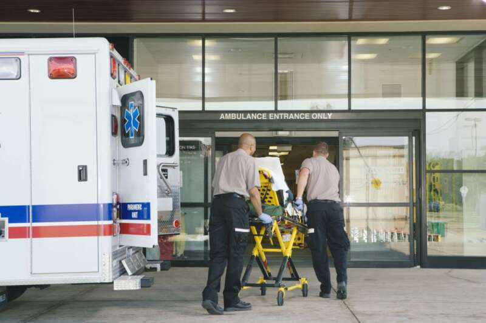
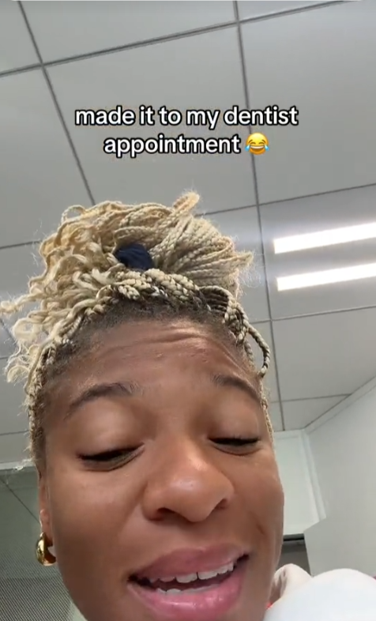
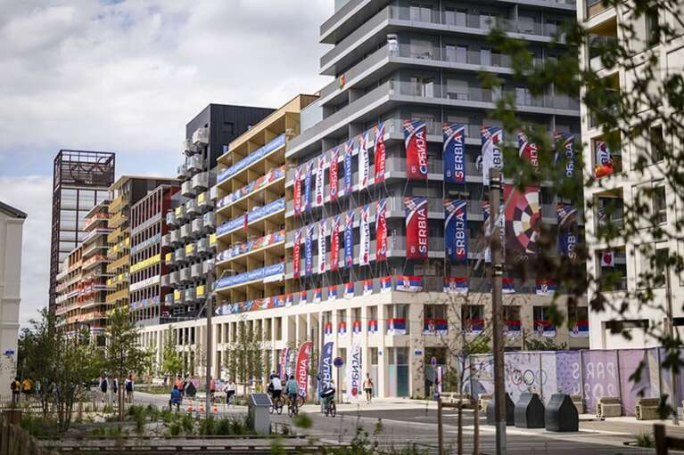

自从巴黎奥运举办以来，对于奥运村的批评就从来没有停止过……前有体操女皇拜尔斯怒批奥运村伙食难吃：后有意大利游泳运动员切孔因为奥运村没空调热得不行，跑去公园草地上睡觉，还差点被人当成流浪汉：

但是，也有一些运动员，在住在奥运村的这段时间里，发现了意外之喜——本届奥运会女子七人制橄榄球铜牌得主、美国选手阿丽亚娜·拉姆齐（Ariana Ramsey）就在抖音上高兴地发了一段视频，并盛赞奥运村为运动员们提供的免费医疗护理服务：
“奥运村竟然有免费的牙科护理和医疗保健服务！我刚刚就做了一次免费的涂片检查，下周还约好了牙医，并且准备做一次眼科检查！天哪，你敢信吗？”代表利比亚参加100米跨栏比赛的运动员博尼·莫里森 (Ebony Morrison)也有同样的体验。她在视频中解释道：“我现在就在去综合诊所的路上……在上届奥运会上，我免费做了一次根管治疗。”而在美国，这样的治疗可能要花费数百甚至数千美元。巴黎奥运村健康中心位于一家综合诊所内，是根据巴黎2024奥组委和巴黎公立医院援助组织（AP-HP）之间的合作协议而创建的。健康中心会为参加奥运会的10500名运动员以及参加残奥会的4500名运动员提供运动医学、心脏病学、妇科甚至是眼科的免费咨询。同时，那里也提供急救服务，以应对赛场上可能发生的紧急状况。如果运动员们出现了更严重的健康问题，他们将被转移到巴黎地区的专业医院进行进一步诊疗。

很快，这条视频就得到了大量的评论、转发。不少美国网友纷纷表示自己羡慕哭了——因为在美国，免费医疗这种事他们是想也不敢想：“好悲伤，在美国这简直就是天方夜谭一般的概念。”
“这是法国独有的，还是奥运会独有的？这简直棒呆了。”很快，法国网友们也开始涌入阿丽亚娜这条视频的评论区，解释起法国的医疗保障制度——在法国，许多治疗项目和药品都可以通过Carte Vitale（社保卡，也叫智慧卡）以及mutuelle（补充医疗保险）进行报销，不过在看诊时仍需预支费用。
而对于低收入人群和学生，他们则可以申请获得Complémentaire santésolidaire（法国医疗互助险），除了提供报销额度之外，它还提供牙科、眼镜及助听器的购买和修复等多种福利政策。如果是学生，再加上额外购买的CVEC（学生和校园生活贡献），几乎就可以覆盖全部的医疗费用。与此同时，法国医疗的效率也让很多美国网友惊叹不已。一位网友表示，自己住在洛杉矶，等了5个月才约到妇科医生。还有一位网友则等了整整6个月，那时候他的病都已经差不多快好了……得知这个消息之后，大洋彼岸的美国网友已经坐不住了——“怎样才能在法国留下来？”
“在那儿待着是免费的吗？你能在比赛开始前或者结束后也待在那里吗？我是说，能不能一辈子待在那儿啊？”的确，美国医疗昂贵这件事已经是人尽皆知，例如“宁肯拖着断腿爬也不坐救护车”这样的段子已经传遍全网，好笑中透露着心酸。
据经济合作与发展组织的数据，在美国，每个人在医疗方面的花费高达10,600美元（超过9,700欧元），是欧洲国家的两倍。

巨大的医疗经济负担，使得许多美国人完全不敢松懈，因为一旦失去工作，他们就将失去医疗保险。
前NBA密尔沃基雄鹿队球员托尼·斯内尔就曾请求NBA与他签署一份为期10天的最后合同，以便在球队继续效力10年、让他和家人继续享受全额医疗保险。
而这一切的原因，是因为托尼的孩子患有自闭症，如果没有医疗保险，哪怕像他这样收入不错的职业运动员，也无法负担孩子高昂的医疗费。正所谓没有对比，就没有伤害。尽管法国的医疗体系也不是完美的，但对比美国，还是好了不少。这下，一直被吐槽的法国人也终于扬眉吐气了——谁说咱们只有纸板床和蒸笼房，你看看，免费的医疗服务它不香吗？“欢迎来到法国！”
“能听到一些积极的反馈真是太好了，太多的人都在抱怨。感谢你发了这则视频！”
过了一周之后，阿丽亚娜也如期更新了视频——她表示，自己成功赴约了牙科问诊，并且补好了自己隐隐作痛的牙齿，没有花一分钱。
这一切的感受实在是太神奇、太愉快了，而她也希望通过这种方式，让更多人看到奥运村积极的一面。

看来，奥运村的生活，也没有想象的那么糟~